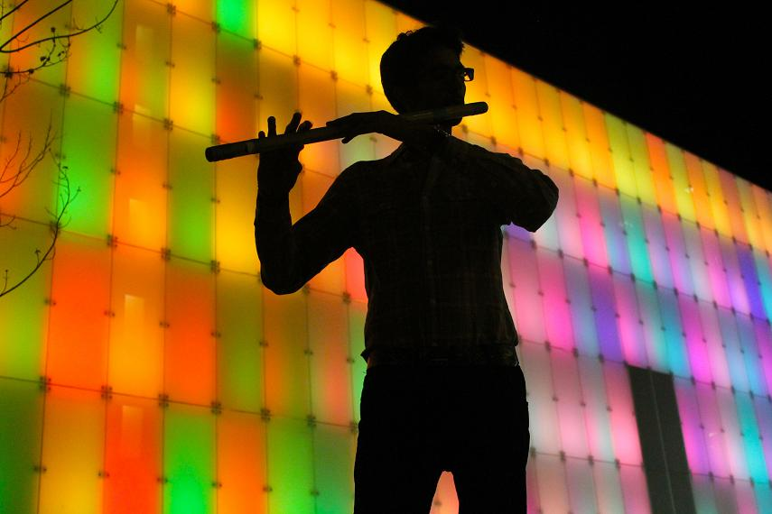

Spotlight: HASHEEL LODHIA

By Hannah Polinski
Photos by Emma Cosgrove
Uploaded on November 30, 2013
Hasheel Lodhia is spicing up the Toronto music scene with exotic sounds that fuse the classical and modern, instrumental and electronic, the East and the West.
Lodhia, a third year Hospitality and Tourism Management student, is a classical Indian musician who specializes in vocals and bansuri, the Indian flute. He has been training in the East Indian Classical Vocal since the age of five under his father's instruction. He started playing the western flute at the age of 13 and picked up the bansuri after learning that his temple was offering music lessons. Having his community's full support through his music education motivated Lodhia. "My temple has raised me," Lodhia says. "They put me on TV and gave me a radio spot and just pushed me to do well."
Lodhia's interest in the bansuri soared when he took a year off after high school to pursue his passion for music in India before completing a four year double major in Biology and Mathematics at McMaster University. In India, Lodhia studied music liberally for several hours a day. He learned how to play not only as an accompanist, but as a soloist under Hariprasad Chaurasia, a world-renowned flute player and one of Lodhia's biggest musical influences.
Although Lodhia draws inspiration from Indian music, he has also immersed himself in Western music genres and composed various orchestral pieces and arrangements for popular songs. Lodhia explains that the main difference between Western music and Indian music is that the latter is improvised and almost never written down.
"Western music doesn't allow me to express myself as well as Indian music," Lodhia admits. "I think Indian Ragas are a lot more expressive because you can do a lot more without writing things down. I think writing down music limits your full potential to play."
 |
Lodhia has been told his style is very melancholy. However, he claims that his tone depends entirely on his mood and who he is playing with. In Indian music, it is unusual to play the same song twice because much of it is improvised.
"I can very easily mimic or compliment other people's styles," Lodhia explains. "As an accompanist, you have to alter your style to others who are singing or playing."
Although Lodhia's musical background is classical, he does not hesitate to push boundaries and experiment with new sounds. Lodhia is part of a band called Omnesia that creates a unique fusion of electronic, dubstep, and drum and bass with Indian classical melodies.
"Whenever I hear [an electronic] song I hear myself playing on top of it," Lodhia says.
He hopes to entrance a younger crowd with this electronic-classical fusion. It is mainly the older generation who listens to Indian classical music, but Lodhia just may change that.
"I performed at International Students Day in September," Lodhia explains happily. "It was an entirely electronic set with Indian flute overtop. The crowd really enjoyed it."
|
Another of his current musical ventures is the Green Sky Project, which highlights Lodhia's love for fusion. The Green Sky Project is an orchestral quartet that has evolved with many Balkan, Indian and Iranian influences. The Green Sky Project released a CD three weeks ago, entitled Star in a Jar. They have an upcoming show this February in Windsor.
Lodhia's music has been featured on a few movie soundtracks, one of which was filmed in Toronto.
"I actually haven't seen that movie," Lodhia laughs. "I just know I did the music. It was really cool because I'm a big part of that album."
In the future, Lodhia hopes to put more time into pursing his musical passion. He certainly does not lack the motivation, only the time. It is difficult for him to balance music into his busy schedule packed with school and his myriad of extra-curricular activities.
"Music is my mind," he explains. "My motivation is the way I react without music in my life. I'm not as happier as a person without it."
"I would say that there is nothing more empowering than the support, feedback, and comments of my listeners," Lodhia says. "Although, as a musician, I play for my own peace and betterment, it uplifts me even more to know that there are others who attain even a little bit of joy from my music. Music is the weapon of the future."
back to spotlight